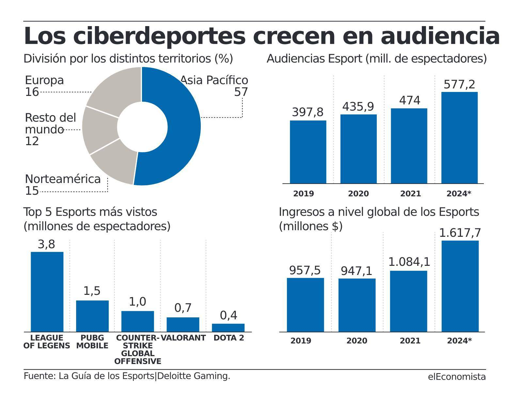
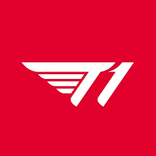
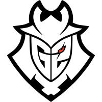
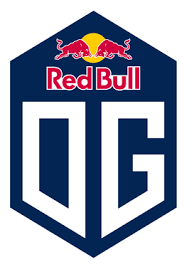
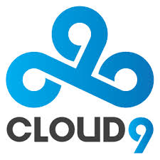
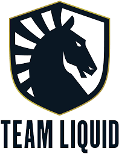

Todo Sobre Esports |
Login | Registrarse |
Los eSports, como competiciones de videojuegos a gran escala, tuvieron su primer gran torneo en 1980 y contaron con más de 10.000 participantes, de forma presencial, de todo Estados Unidos. El juego protagonista de tal competición era el Space Invaders, más conocido como “mata marcianos”.
Desde esta primera gran aparición de los eSports en un evento multitudinario hasta la actualidad, se han celebrado otros eventos en diversas décadas, como en la de los noventa, destacando en los noventa, el Nintendo World Championship, cuyos protagonistas principales fueron el archiconocido Super Mario y The Legend of Zelda. Posteriormente, desde 1997 se comenzaron a celebrar los torneos de Red Annihilation y Starcraft, ambos considerados como eSports modernos. Los dos pasaron a la historia de esta modalidad de entretenimiento por motivos muy diferentes, en concreto, el primero lo hizo por tener como premio para el ganador o ganadora un Ferrari, y el segundo por considerar a los jugadores como atletas, es decir, jugadores profesionales.
En Europa, se fundó la Electronic Sports League (ESL) en el año 2000 y mediante ella llegaron las competiciones de eSports a España. En el año 2006 se celebró, en un cibercafé cercano a Plaza de España en Madrid, la quinta edición de la e-Sensation, que serviría para elegir a la selección española que participaría en la European Nations Championship de ESL. Tras ello, la e-Sensation fue comprada por ESL y pasó a ser ESL España.
El punto álgido mundial de este fenómeno llegó de la mano de Blizzard con el Warcraft hasta llegar al League Of Legends, considerado a día de hoy el juego más popular de eSports.
La evolución de los videojuegos ha pasado de un uso principalmente individual a un uso colectivo y ello se debe al desarrollo de las nuevas tecnologías, lo que, a su vez ha propiciado que muchos usuarios tengan acceso a ellos. Asimismo, dicho desarrollo tecnológico ha favorecido la creación de competiciones, las cuales son vistas y disfrutadas por millones de personas, y más aún en un contexto de pandemia mundial, generando, por ende, unas importantes cantidades de beneficios y produciendo finalmente una profesionalización de los competidores en estos eventos.
Es un sector en auge y en constante y sostenible crecimiento tal y como indican consultoras especializadas en el mismo, entre las que cabe destacar Newzoo4, que demuestra un crecimiento progresivo desde 2018 y prevé alcanzar un margen de beneficio de más de 1500 millones de euros en 2025.
SKT T1 es uno de los mejores equipos de League of Legends de la historia, que cuenta en su plantilla con grandes jugadores como Faker, considerado por muchos el mejor jugador de la historia del videojuego.
G2 Esports, club español formado por Carlos 'ocelote' Rodríguez en octubre de 2015. Equipo dedicado a multitud de esports, con equipos de League of Legends, Counter Strike, Call of Duty, Rocket League, Vainglory, e incluso de iRacing, colaborando con Fernando Alonso, famoso piloto de Formula 1. Durante varios años fueron conocidos comos los "Reyes de Europa" en League of Legends, gracias a su dominio de principio a fin en la extinta LCS.
Fundado en 2015 por Johan 'N0tail' Sundstein, OG Esports ya se encuentra entre las marcas de deportes electrónicos más populares del mundo. Inicialmente conocido por su plantilla de Dota 2 que alcanzó los logros más altos e inigualables posibles en la escena, OG ahora es hogar de mentes brillantes que siguen el mismo camino hacia la excelencia en múltiples divisiones de deportes electrónicos.
Cloud9 (C9) es una organización estadounidense de deportes electrónicos fundada en 2013 por Jack Etienne. Actualmente cuenta con representantes a nivel profesional en League of Legends, Overwatch, Counter-Strike: Global Offensive, Tom Clancy's Rainbow Six: Siege, Super Smash Bros.
Team Liquid es una herramienta para organización mundial de deportes electrónicos profesionales con decenas de atletas y múltiples victorias en campeonatos de juegos como Dota 2, League of Legends, CS: GO, Fortnite y Street Fighter.
